計算神経科学・1 日研究の報告
培養皮質とハエのコネクトームで点火点を探すと、
触角葉の興奮性ハブに行き着く
培養した大脳皮質ニューロンのバーストは、日をまたいで戻るホットスポットから始まり、その場所は発火率よりも「結合の主モード」と対応した。ハエの全脳配線図のモデルで同じ問いを立てると、触角葉の興奮性ループ（アセチルコリン性局所ニューロンと投射ニューロン）が、配線の主モードであり、モデルの自発活動の主な駆動源として浮かび上がった。
Kazushi Takehana
2026 年 10 月 27 日
論文：Where spontaneous bursts ignite in cultured cortex and in the fly connectome points to an excitatory hub in the antennal lobe
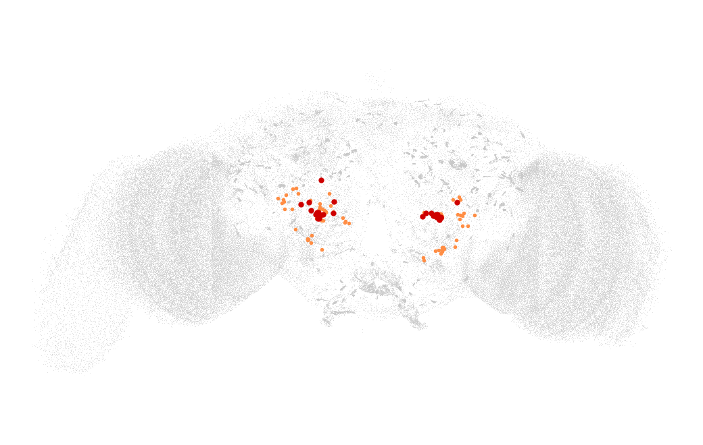
問い
ネットワークバースト＝多くのニューロンが数百 ms のあいだ一斉に発火する現象。培養した神経細胞は、刺激がなくてもこれを繰り返す。
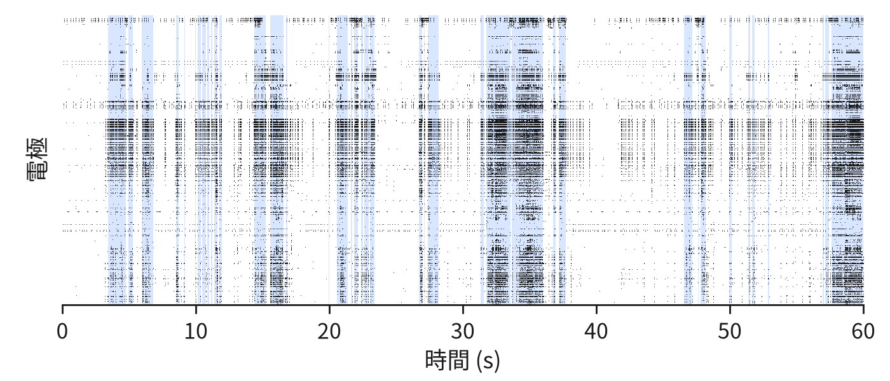
同じ 3 つの問いを、同じ物差しで
培養神経とハエの全脳に当てる。
研究の設計
ラット胎仔の大脳皮質の分散培養。HD-MEA でほぼ毎日 30 分記録（7 培養）。再現用に 59 電極の古典データ（30 培養）
→ 点火点と、臨界からの距離
全脳配線図 FlyWire から作ったスパイキングモデル（Shiu ら 2024）に、培養と同じ条件（ノイズ＋短期抑圧）を与える
→ 点火点とハブの予測
予測したハブをモデルの中で黙らせ、出力シナプス数をそろえた対照と比べて、バーストが減るかを見る
→ 必要性の確認
刺激なしで記録した全脳のカルシウムイメージング（Turner ら 2021、20 匹、74 領域）
→ 予測と矛盾しないか
結果 1 培養：点火点
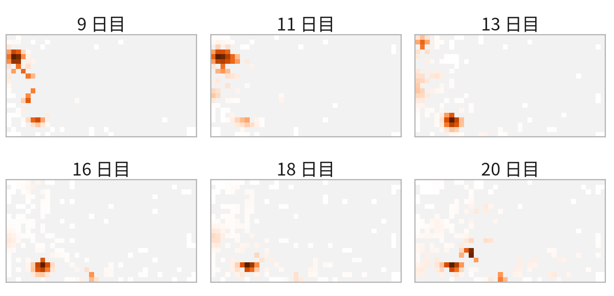
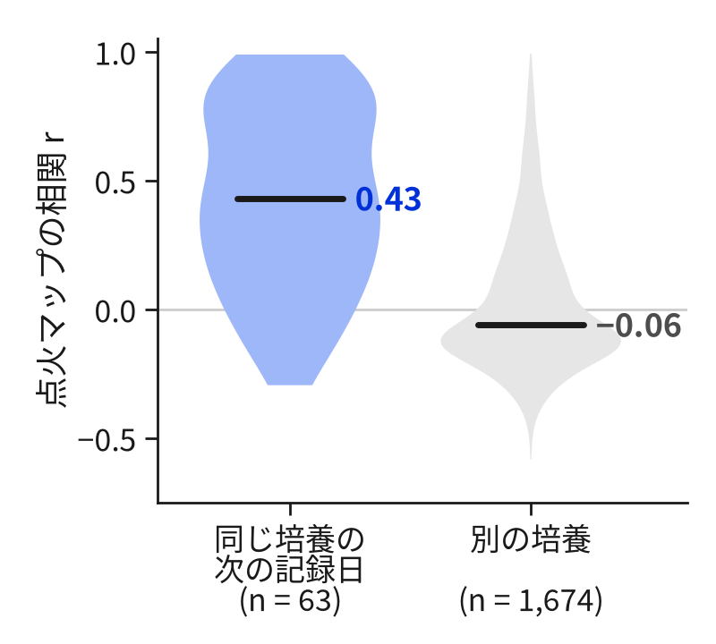
ホットスポット間の距離：0.58 mm 対 1.75 mm。7/7 培養で同じ傾向（P = 9 × 10−18）
注意：連続する記録日は記録電極の配置も似ている（重なり 0.49 対 0.10）。ただし「点火 − 活動密度」の残差マップも安定（r = 0.39 対 0.02）。
結果 2 培養：何が点火点を決めるか
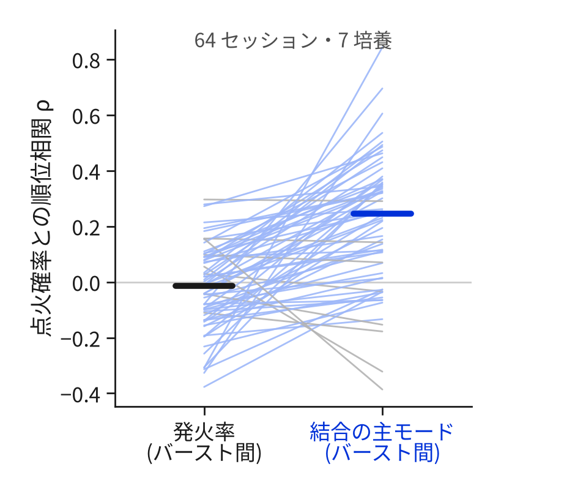
バースト間の静かな時間に、電極どうしのゆらぎの相関（機能的結合）を求め、その主固有ベクトルをとる。＝協調したゆらぎが最も大きく集まるパターン。
効果は中程度で、場所の単位に限られる。59 電極の粗い配列では検出できない。
結果 3 培養：暴走からの距離
1 個のスパイクが、次の瞬間に平均いくつのスパイクを生むか。m < 1 なら活動は消えていき、m > 1 なら暴走する。m = 1 が境目（臨界）。
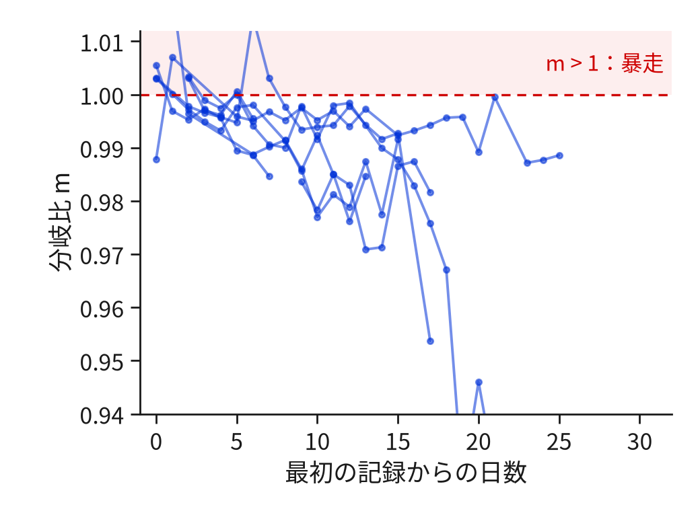
ハエの全脳モデル
Shiu ら（2024）のLIF モデル（漏れ積分発火）。自由パラメータは 1 つで、行動の実験で較正済み。これをゲイン g = 1 とする。
興奮か抑制か（伝達物質の符号）を 4 通りに仮定
| 仮定 | 内容 |
|---|---|
| 最小補正（MC） | 公開の符号のまま。ただし低い確信度で「セロトニン」とされた触角葉の局所ニューロン 40 個を抑制性に。うち 21 個（lLN1_bc 7 個を含む）は文献ではアセチルコリン作動性 |
| 文献整合の最小補正（LC） | 40 個のうち文献でアセチルコリンと分かっている 21 個は興奮性のまま、残り 19 個だけ抑制性に |
| 細胞タイプ多数決（CV） | 細胞タイプごとに 1 つの伝達物質。文献で分かっているものを優先（15,901 個の符号が変わる） |
| モノアミンなし（NM） | CV から、ドーパミン・セロトニンなどの速いシナプス作用を除く |
伝達物質は電子顕微鏡画像からの AI 予測で、一部は誤っている。だから結論は複数の仮定で確かめる。公開の符号のままでは、どんなに弱いノイズでも嗅覚系が暴走して止まらない（付録 10）。
結果 4 ハエのモデル：暴走からの距離
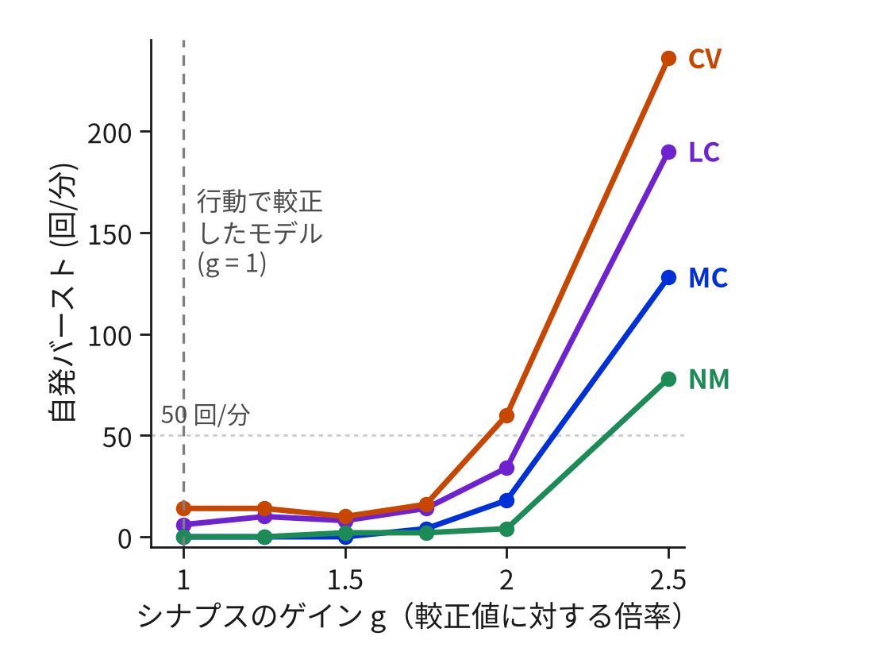
較正済みのハエの脳はバーストの始まりの手前〜境目にあり、頻繁なバーストまでシナプスの強さで約 2 倍の距離がある。
結果 5 ハエのモデル：点火点と駆動源
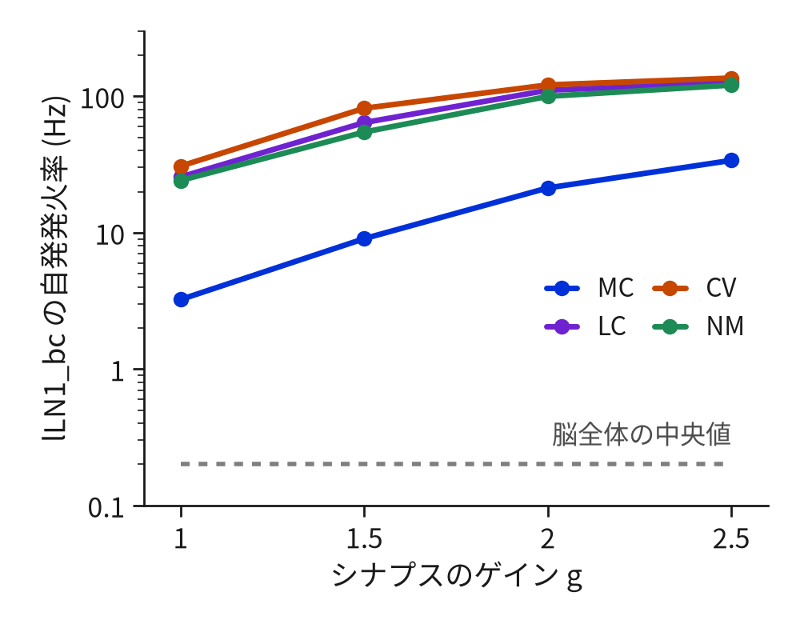
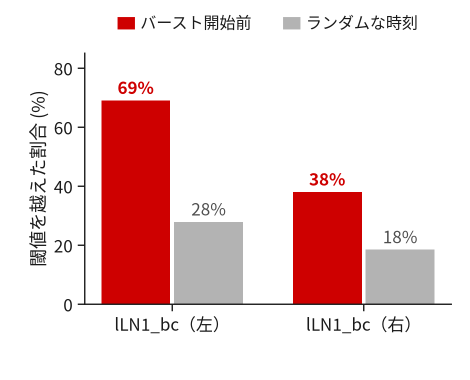
LC・CV・NM（文献と矛盾しない仮定）：常時発火
g = 2〜2.5 で 100〜136 Hz（111 個全体で 37〜60 Hz）。g = 1 でも 24〜31 Hz で上位 0.15% 以内。バーストは視覚系と中心複合体から始まる。
MC だけ：先に発火（中程度）
左 69% 対 28%（P = 1 × 10−5）、右 38% 対 18%（P = 0.01）。6 条件中 5 で有意だが、偶然の 1.7〜2.7 倍にとどまる。
なぜ触角葉か
ペロン固有ベクトル＝興奮を強めていったとき最初に育つ活動パターン。配線だけから計算できる「主モード」。
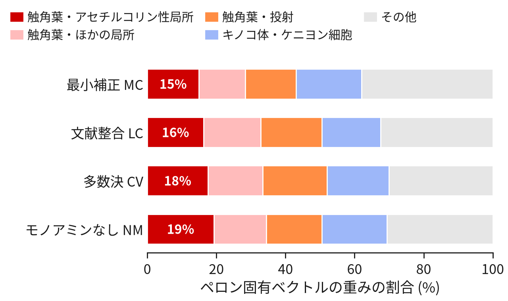
因果の検証（モデルの中で）
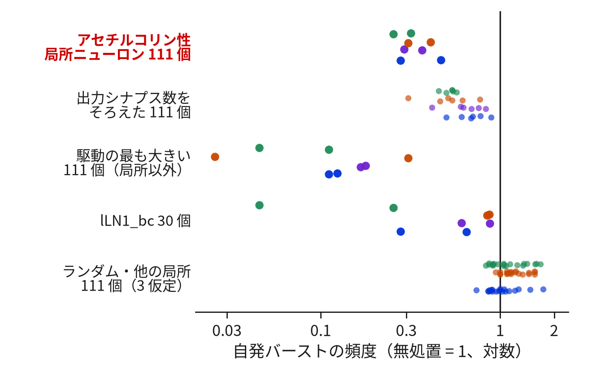
ハブは 1 つの細胞タイプではなく、触角葉の興奮性ループ。
本物のハエ
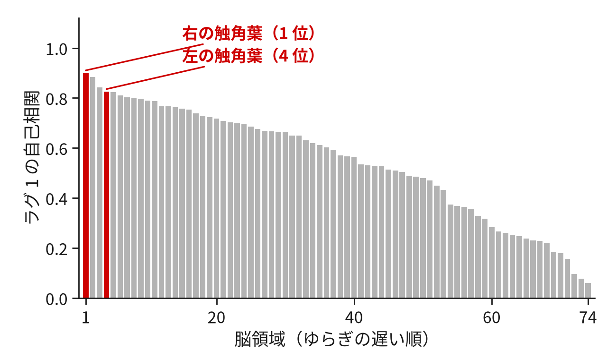
Turner ら（2021）：20 匹、全神経細胞にカルシウムセンサー GCaMP6s、刺激なしで約 28 分。
感覚入力、領域の大きさ、受容細胞の末端の多さも寄与しうる。領域ごとのモデルとの対応は弱い（|ρ| ≤ 0.30）→「矛盾しない」にとどまる。
まとめと予測
ハエの結果はモデルの予測。電気シナプスがない、伝達物質は仮定、文献とは緊張関係もある（次のスライド）。
限界
付録
付録 培養：データ
| DANDI 002020（主データ） | Wagenaar ら 2006（再現用） | |
|---|---|---|
| 試料 | ラット E18 大脳皮質の分散培養 | ラット大脳皮質の高密度培養 |
| 記録 | MaxOne HD-MEA（26,400 電極、17.5 µm 間隔、1 回約 1,000 電極）、ほぼ毎日 30 分 | 59 電極（200 µm 間隔）、3〜39 日、各約 45 分 |
| 規模 | 7 培養 × 11〜30 日 = 129 セッション | 30 培養、527 記録 |
| 除外 | ほぼ空の 15 セッション → 114 セッション | 1 記録 → 526 記録 |
| バースト | 30,349 回 | 111,329 回 |
| 点火の解析 | バースト 20 回以上の 70 セッション、28,504 回 | 363 記録、91,670 回 |
| 活動電極（中央値） | 426 個 | 56 個 |
付録 培養：方法
| 段階 | 定義 |
|---|---|
| 集計 | 10 ms ビンの集団スパイク数 c(t) |
| 高い閾値 | max(5 × c の中央値, 0.1 × 活動電極数, 5) |
| バースト | 高い閾値の半分以上が続く区間で、高い閾値を 1 回以上越えるもの。100 ms 未満の間隔は結合 |
| 最低参加率 | 活動電極の 20% 以上が発火（未満は「小さなイベント」） |
| 点火点 | 最初の 20 スパイクの位置の重心 |
| 点火マップ | 100 µm の格子に数え、σ = 100 µm で平滑化、バースト数で割る |
| 安定性 | 連続する記録日の地図の Pearson 相関（両方で記録した区画） |
| 分岐比 | 4 ms ビン、MR 推定量、k = 1〜50 |
4 セッションの波形確認で、59 電極では 1 電極だけのバーストが閾値を何百回も越えた（例：556 回、参加率 9%）。そこで「最低参加率 20%」を加えた。セッションをまたぐ解析の前で、ほかの値は変えていない。
閾値・K（10/40）・最低参加率（10%/40%）・k の上限（25/100）を 0.5 倍・2 倍にして確認。バースト外スパイクの割合は閾値に強く依存（0.36 / 0.53 / 0.74）。発達の傾向は変わらない。
ランダムな 20 スパイク窓の対照、記録電極密度の補正、2 秒の傾向除去をした m、開始時のスパイク構成、結合の主モード。
付録 培養：点火点
| 指標 | 観測 | 対照 | 補足 |
|---|---|---|---|
| 最初の 20 スパイクの広がり（ランダム 20 個との比） | 0.62 | 1 | 70 中 69 セッションで 1 未満、P = 4 × 10−13 |
| 上位 10% の電極が最初のスパイクを出すバースト | 81% | 48% | バーストのスパイク分布から期待される値 |
| 点火マップの相関（連続する記録日 対 別の培養） | 0.43 | −0.06 | P = 9 × 10−18、7/7 培養 |
| ホットスポット間の距離 | 0.58 mm | 1.75 mm | 6/7 培養で近い |
| 残差マップ（点火 − 活動密度）の相関 | 0.39 | 0.02 | 7/7 培養。点火は活動の多い場所の写しではない |
| 点火点の集中度（ランダムな 20 スパイク窓と比べて） | 0.56 | 0.48 | 差は控えめ、5/7 培養 |
| 記録した区画の重なり（Jaccard、連続 対 別培養） | 0.49 | 0.10 | 安定性の一部は電極配置の類似かもしれない |
| 59 電極（Wagenaar）での集中 | 再現せず | 重心の平均化による見かけ（ランダム窓の方が集中） | |
点火点は 1 か所の焦点ではなく「いくつかのホットスポット」に分かれる。重心は 2 つの離れた場所の間に落ちうるので、K = 10・40 と最初の 20 ms の重心でも確かめた。
付録 培養：点火の予測
場所の単位（100 µm の区画ごと、点火確率との順位相関）
| 予測量 | ρ | 正の培養 |
|---|---|---|
| バースト間の発火率 | 0.01 | 3/7 |
| バースト中の発火率 | 0.16 | 6/7 |
| 近くの記録電極の数（配置密度） | 0.40 | 7/7 |
| 局所の活動密度（200 µm 以内）→ 配置密度で補正 | 0.29 → −0.00 | 7/7 → 3/7 |
| バースト間の結合の主モード | 0.25 | 7/7 |
| 同、配置密度で補正（偏相関） | 0.14 | 7/7 |
主モードは同じ電極で計算した発火率に 88% のセッション（56/64）で勝つ（P = 6 × 10−8）。偏相関の四分位 −0.03〜0.29。
バースト間によく発火する電極ほど、最初の 20 スパイクの多くを担う（ρ = 0.46、7/7 培養）。主モードは電極単位では発火率に勝たない（53% のセッション）。
バースト間（各バーストの ±100 ms を除く）の 20 ms ごとのスパイク数を電極どうしで相関させる（30 スパイク以上の電極）。負の値・対角・50 µm 未満の組（重複検出の恐れ）は 0 にし、主固有ベクトルをとる。
付録 バーストの性質
| HD-MEA 培養 | 59 電極培養 | ハエのモデル（g = 2.5） | |
|---|---|---|---|
| 頻度（回/分、中央値） | 1.6 | 2.4 | 78〜236 |
| 長さ（中央値） | 390 ms | 150 ms | 18〜40 ms |
| 参加率（活動電極のうち発火する割合） | 0.94 | 0.47 | 培養より小さい |
| バースト外のスパイクの割合 | 0.53 | 0.81 | 0.79〜0.95 |
| 分岐比 m（全体） | 0.992 | 0.986 | 距離の指標にならない（付録 20） |
| 分岐比 m（バーストを除く） | 0.995 | 0.991 | — |
バースト外スパイクの割合は閾値に強く依存する（HD-MEA で閾値 0.5 倍・1 倍・2 倍：0.36・0.53・0.74）。59 電極では閾値を下げると小さな「バーストレット」が多数数えられる（2.4 → 16.1 回/分）。
ハエのモデルは g = 2.5 でもスパイクの大半がバーストの外にあり、バーストは短く鋭い。培養の「長い一斉発火」とは性質が異なる。
付録 培養：発達
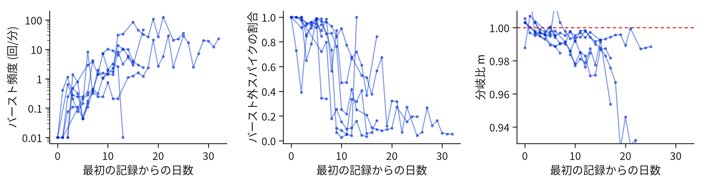
セッションの間では、バーストが多いほどバースト間の m は低い（ρ = −0.69）。「強いバースト」と「残響するバースト間活動」はトレードオフの関係にある（Zierenberg ら 2018 の考えと一致）。若い非同期の培養での m ≈ 1 は、遅い発火率の変動を反映している可能性がある。
付録 培養：使用後の変化
問い（設計メモ ⑤）：自発活動を続けると、回路は臨界に近づくか（シナプスの増強＝睡眠の SHY 仮説型）、離れるか（疲労型）。
| 後半 15 分 − 前半 15 分 | HD-MEA（113） | 59 電極（526） |
|---|---|---|
| 全体の m | −0.0004（わずかに低下） | −0.0002（わずかに低下） |
| バースト間の m | 変化なし | −0.0018（P = 8 × 10−8） |
| バースト頻度 | 変化なし | わずかに減少 |
→ 30 分の時間スケールでは、結合の実効的な強さが積み上がる証拠はない。効果はごく小さい（59 電極でバースト間の時定数が約 25% 短くなる程度）。
ChR2 で光刺激する「使用」の前後で m を比べる実験では、自発活動だけでも m がわずかに下がりうる。対照として、刺激しない同じ長さの記録を同じ日に取るとよい。
ハエの覚醒中のシナプスの増加（Bushey ら 2011）は、バーストに必要な約 2 倍よりずっと小さい。それでも自発バーストを起こしやすくするなら、まず触角葉に現れるはず。
付録 ハエのモデル：方法
dv/dt = (v0 − v + I) / τm dI/dt = − I / τs
v：膜電位、I：シナプス入力。しきい値で発火してリセット
| 定数（Shiu ら 2024 と同一） | 値 |
|---|---|
| 静止・リセット電位／しきい値 | −52 mV／−45 mV |
| 膜時定数／シナプス時定数 | 20 ms／5 ms |
| 不応期／シナプス遅延 | 2.2 ms／1.8 ms |
| シナプス 1 個の重み（g = 1） | 0.275 mV |
| 時間刻み | 0.1 ms |
GPU のイベント駆動実装。元の Brian 2 のコードとニューロンごとに一致（r ≥ 0.999）。不応期中に届いた入力を捨てる Brian 2 の動作も再現。
付録 伝達物質の仮定
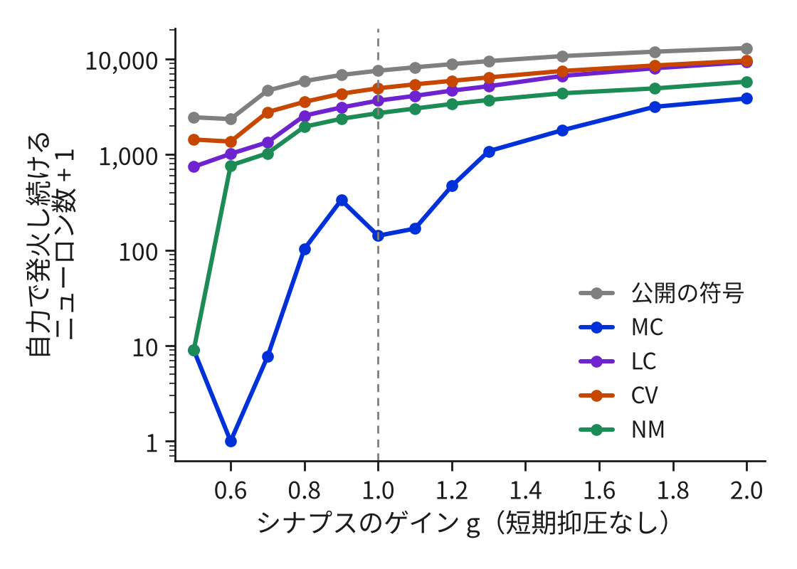
| 仮定 | 40 個の「セロトニン」局所ニューロン | lLN1_bc がコアに入る g |
|---|---|---|
| MC | 40 個すべて抑制性 | 0.8 |
| LC | 文献でアセチルコリンの 21 個は興奮性、19 個は抑制性 | 0.5 以下 |
| CV | 細胞タイプの多数決に従う | 0.5 以下 |
| NM | CV と同じ（モノアミンの速い作用なし） | 0.6 |
付録 ハエのモデル：方法
20 ms で平滑化した脳全体の発火率が「背景の期待値（ニューロン数 × 入力頻度）の 1.5 倍＋30 スパイク/ms」を 10 ms 以上超えた区間。点火の解析では、5 ms 平滑の発火率が 1.25 倍＋10 スパイク/ms を下回った最後の時刻を開始とした。
ランダムに選んだ 1,024 個のニューロンのスパイクを、培養と同じ解析（バースト外の割合、分岐比）にかける。
点火：10 秒。バーストの統計：15 秒 × 2 シード。黙らせる予備実験：8 秒 × 2 シード × 5 ゲイン。確認実験：20 秒 × 3 シード × 2 ゲイン、対照は 5 回の抽選。
付録 元の最小補正（MC）での点火
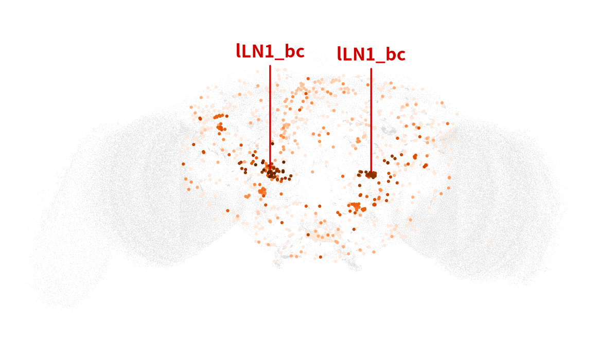
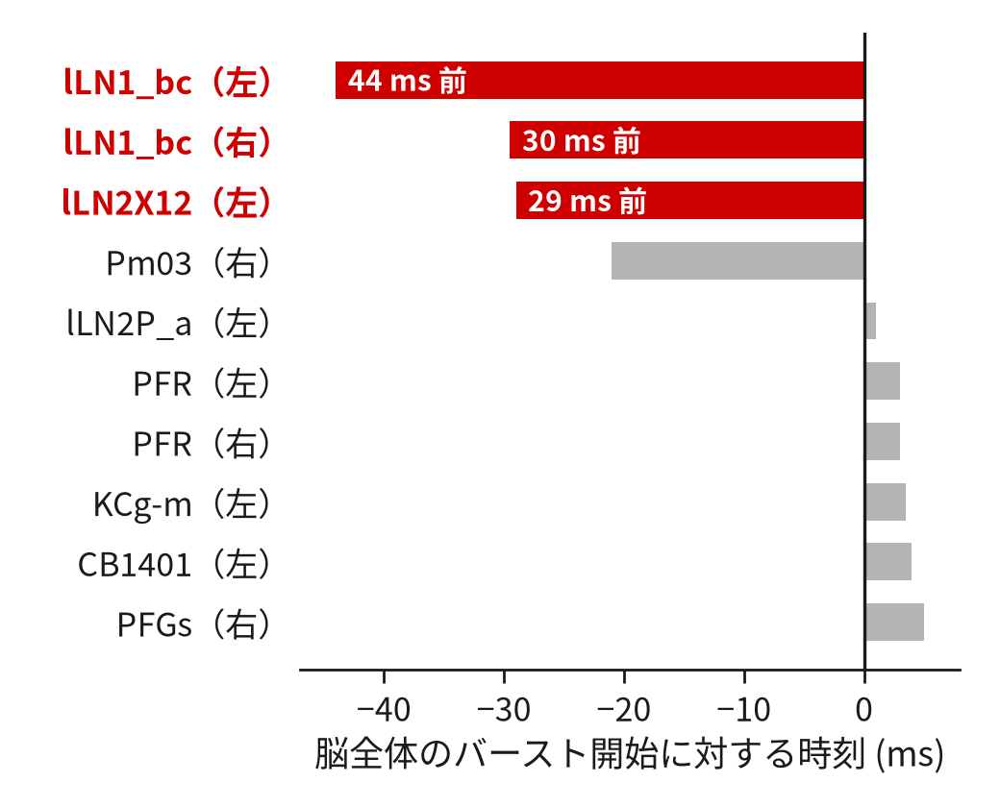
MC、g = 2.5、29 バースト。lLN1_bc は左 44 ms 前（バーストの 90%）、右 30 ms 前（55%）、開始前 20 ms の発火は期待の約 3 倍。ただし MC は 40 個中 21 個（lLN1_bc 7 個を含む）を文献と逆に抑制性にした仮定で、LC・CV・NM ではこの像は出ない。
付録 点火の強さの検定
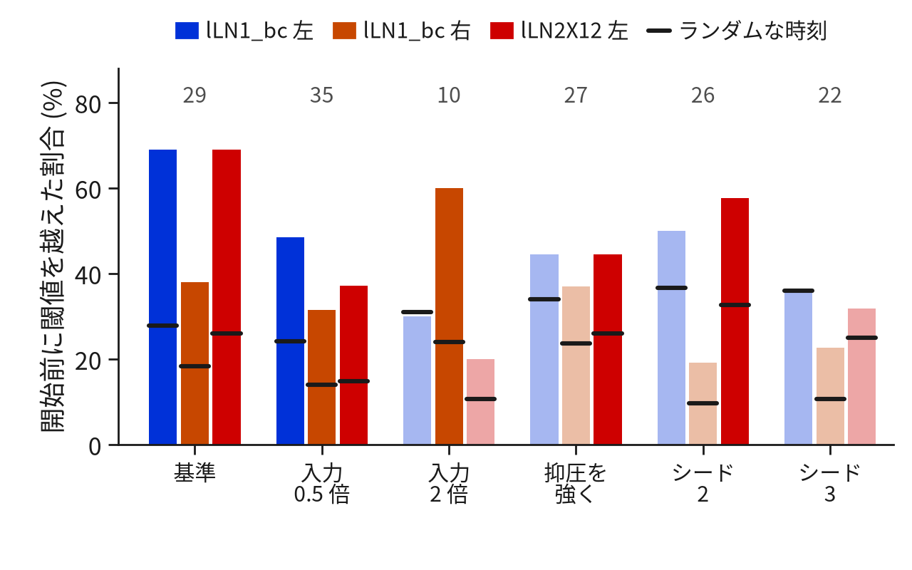
結論：MC でも「引き金」としての役割は中程度。役割は伝達物質の仮定に依存する。
付録 仮定による違い
LC（g = 2.5、48 回）
R1–6 左・右、Mi4 左、TmY5a 右、L3 右
CV（g = 2、15 回）
lLN2P_c 右、T2a 右、Tm3 右、Mi4 右、EL 左
NM（g = 2.5、21 回） BM_InOm 左、T2 右、Pm03 右、KCg-m 左、L5 左
違うのは、バーストの合間に回復するか（MC）、すでに常時発火に入って脳を駆動しているか（LC・CV・NM）。
付録 黙らせる実験
| 仮定・ゲイン | 無処置（回/分） | 局所 111 個 | lLN1_bc 30 個 | そろえた 111 個（3 回） | 駆動最大 111 個 | 平均発火率（111 個） |
|---|---|---|---|---|---|---|
| MC g = 2.0 | 18.3 | 0.28 | 0.28 | 0.72（0.50〜0.89） | 0.11 | −6% |
| MC g = 2.5 | 106.6 | 0.47 | 0.65 | 0.67（0.61〜0.70） | 0.12 | −9% |
| LC g = 2.0 | 24.4 | 0.29 | 0.88 | 0.62（0.42〜0.83） | 0.17 | −25% |
| LC g = 2.5 | 176.6 | 0.37 | 0.61 | 0.68（0.60〜0.76） | 0.18 | −25% |
| CV g = 1.75 | 13.2 | 0.31 | 0.85 | 0.46（0.31〜0.62） | 0.31 | −22% |
| CV g = 2.0 | 39.6 | 0.41 | 0.87 | 0.61（0.51〜0.77） | 0.03 | −23% |
| NM g = 2.25 | 22.3 | 0.32 | 0.05 | 0.50（0.45〜0.55） | 0.05 | −21% |
| NM g = 2.5 | 64.0 | 0.25 | 0.25 | 0.55（0.54〜0.57） | 0.11 | −21% |
付録 黙らせる実験
| 仮定・ゲイン | 無処置 | 局所 111 個 | lLN1_bc 30 個 | ランダム 30 個 | ランダム 111 個 | 他の局所 111 個 |
|---|---|---|---|---|---|---|
| MC g = 2.0 | 19.3 | 5.1 | 6.1 | 18.7 | 18.7 | 25.0 |
| MC g = 2.5 | 110.7 | 47.7 | 70.1 | 104〜106 | ||
| NM g = 2.25 | 22.3 | 5.1 | 7.1 | 対照 15 組はどれも無処置の 0.74〜1.74 倍 （3 仮定 × 2 ゲインの全 6 条件） | ||
| NM g = 2.5 | 66.0 | 11.2 | 30.5 | |||
| CV g = 1.75 | 9.1 | 1.0 | 10.2 | |||
| CV g = 2.0 | 34.5 | 11.2 | 36.5 | |||
付録 電気シナプスの対照
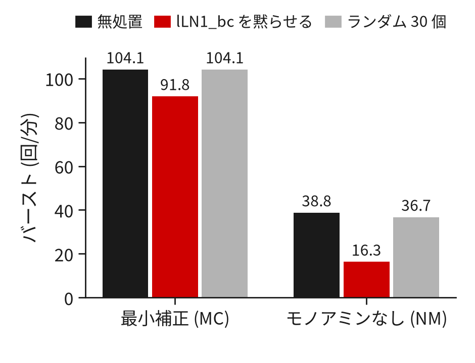
背景：生体では、この局所ニューロンから投射ニューロンへの興奮は主に電気シナプス（ギャップ結合）（Yaksi & Wilson 2010）。配線図には化学シナプスしかない。
| 除いた後 | MC | NM |
|---|---|---|
| ペロンモードに占めるアセチルコリン性局所ニューロン | 21% | 56% |
| 最初の自力で続くコアに占める局所ニューロン | 34%（g = 1.2） | 91%（g = 0.8） |
| lLN1_bc を黙らせたときのバースト（回/分） | 104 → 92（ばらつきの範囲） | 38.8 → 16.3 |
lLN1_bc はペロンモードの最上位のまま（局所ニューロンどうしのループで成り立つ）。ただし因果的な重みは仮定に依存する。
付録 主モードの予測力
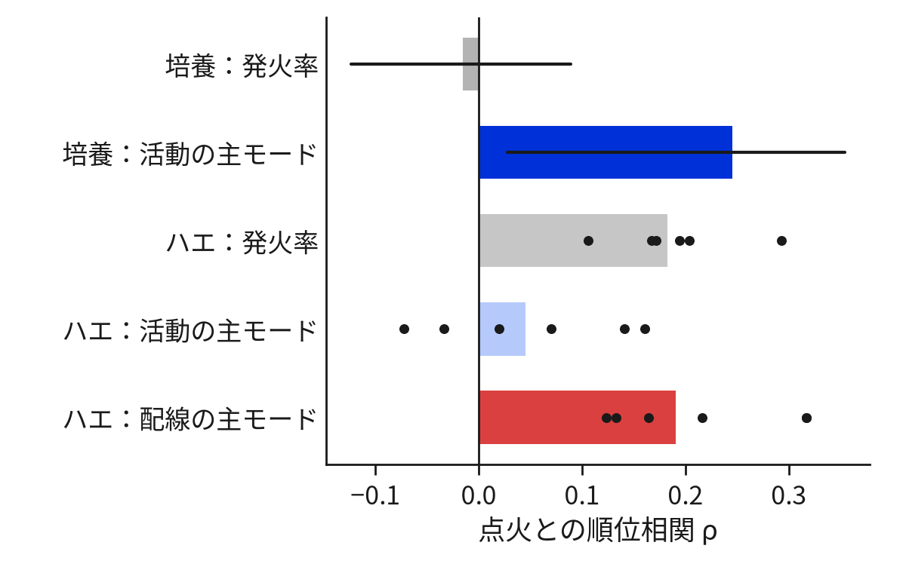
培養とハエを結ぶのは同じ法則ではなく、定性的な類似。配線から読むとハブは見つかるが、脳の残りを発火率より良く並べるわけではない。
付録 左右の 2 つのモード
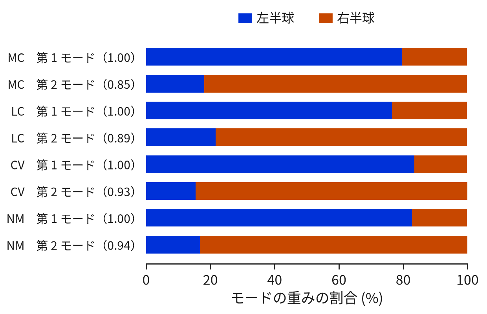
ほぼ独立な 2 つのループのどちらが「第 1」になるかは、わずかな左右差で決まる。この左右差は再構成の非対称性かもしれない（前回の研究：右半球で予測が崩れる原因が配線図の左右差だった）。
付録 共通の物差し
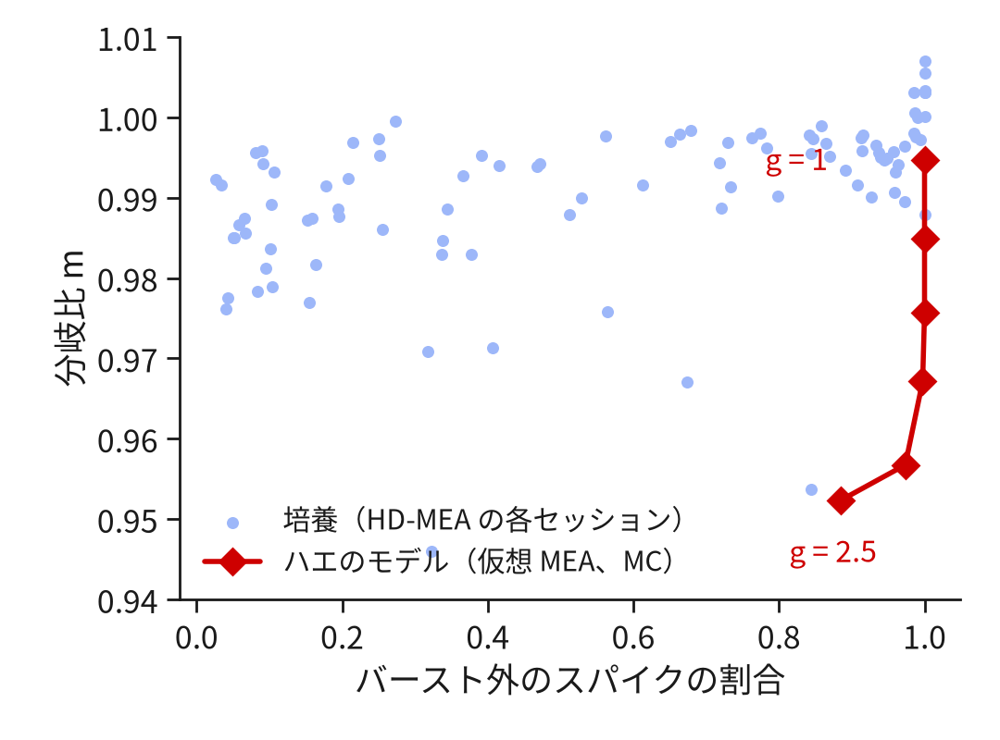
そのため、ハエのモデルの「暴走までの距離」はバーストが始まるゲインで測った（頻繁なバーストまで約 2 倍）。培養の m ≈ 0.99 と同じ数字で比べることはしない。
付録 本物のハエ
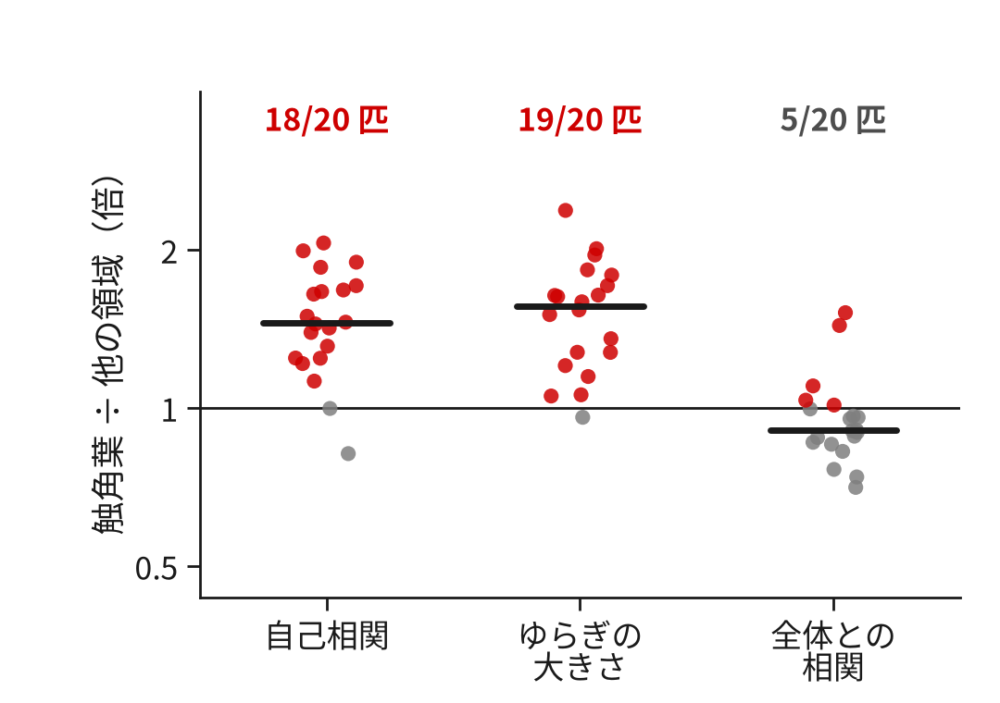
Turner ら 2021：nSyb-GAL4 > GCaMP6s、20 匹、約 1.2 Hz の体積 2 光子イメージング、刺激なし約 28 分、Ito アトラスの 74 領域。ΔF/F は 60 秒窓の 8 パーセンタイルを基準。
| 触角葉 対 他領域（中央値） | 値 | 匹 |
|---|---|---|
| ラグ 1 の自己相関 | 0.85 対 0.58 | 18/20 |
| 同、平均蛍光量（信号雑音比）で補正 | 触角葉が遅い | 17/20 |
| ゆらぎの大きさ（ΔF/F の SD） | 0.048 対 0.029 | 19/20 |
| 脳全体の信号との相関 | 0.50 対 0.52 | 5/20 |
付録 否定的な結果
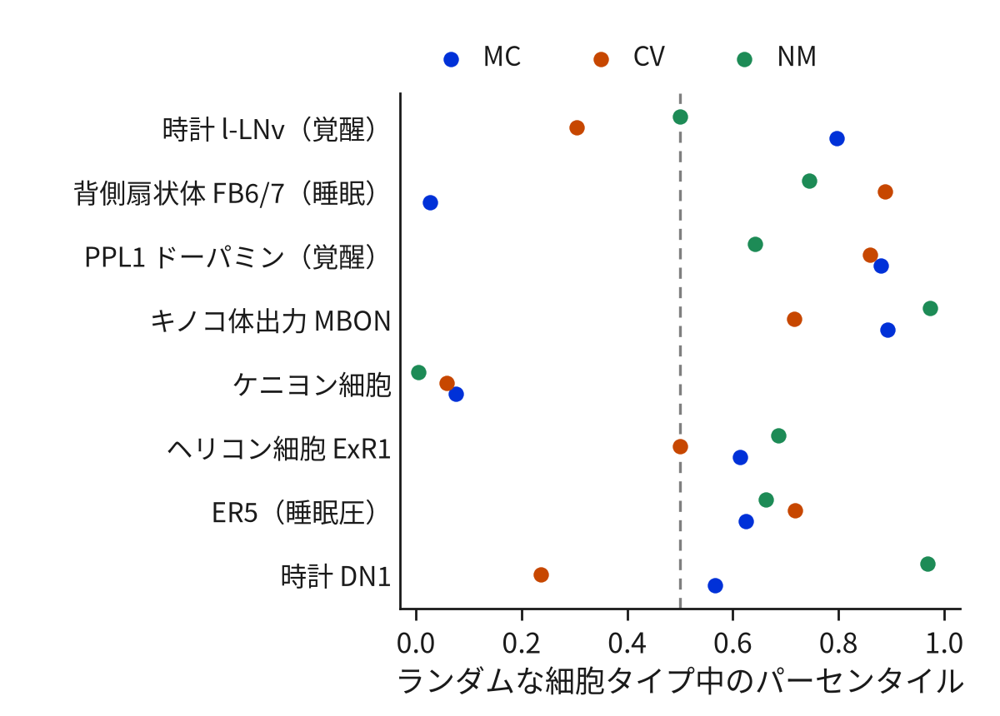
培養の同期バーストは「睡眠に似た状態」にたとえられる（Hinard ら 2012）。そこで、ハエのモデルのバーストが睡眠を制御する回路を特に強く巻き込むかを調べた。
ハエのモデルでは、自発的な点火から睡眠の恒常性回路への直接の経路は見えない。
付録 文献との整合
先行研究との違い：Li ら 2026（発火率モデルで、暴走を止める抑制性ハブ）、Pospisil ら 2024（線形モデルの固有モード）、Huang ら 2019（光顕の配線図で短期抑圧が安定化）。「どこから始まるか」は扱われていない。
付録 検証実験の案
自発活動を記録し、バースト間の数分の活動から結合の主モードを計算。主モードの重みが大きい区画を「予測点」、重みは小さいが発火率は同程度の区画を「対照点」に選ぶ
刺激前に自発活動を記録し、翌日のホットスポットが予測点と一致するかを見る（観察だけの検証）
予測点と対照点を交互にパターン光刺激し、バーストを起こす確率と潜時を比べる（因果の検証）
付録 限界と注意点
付録 用語集
付録 参考文献
付録 参考文献
付録 クレジット
デジタル庁デザインシステムのデザイントークン（色・タイポグラフィ・角丸）を使用。
MIT License, Copyright (c) 2023 デジタル庁
ライセンス全文：slides/dads/LICENSE
フォント：Noto Sans CJK JP（SIL Open Font License）
図：slides/make_charts.py で results/ から作成